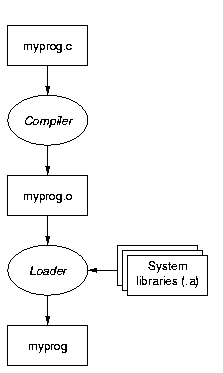
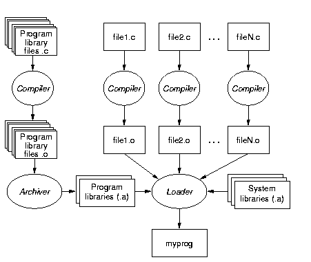
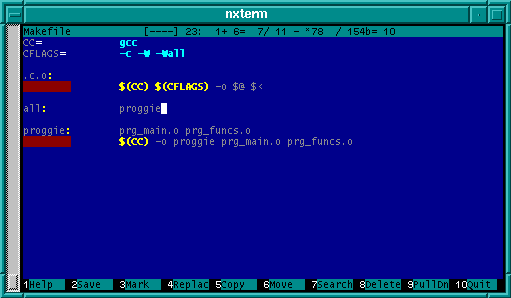

Установка программ из исходных текстов
Процесс компиляции и сборки программ в Unix
Создание исполняемого файла из одиночного файла .c выглядит довольно просто.
Сначала .c-файл компилируется в объектный код (файл .o -- "object"), который
затем при помощи сборщика (loader; его еще называют линкером -- linker) с
добавлением системных библиотек превращается собственно в исполняемый файл.
 |
| Создание программы из одного исходного
файла |
Большинство же программ состоят из нескольких исходных файлов (крупные
программы содержат по несколько сотен и даже тысяч файлов). Эти файлы также
компилируются в объектный код, а потом сборщик делает из них исполняемый файл.
 |
| Создание крупной
программы |
Многие пакеты состоят из нескольких исполняемых файлов, в этом случае каждый
из них собирается точно так же. При этом многие пакеты содержат собственные
библиотеки, которые также компилируются из исходных текстов в объектные файлы
(совершенно аналогично обычным исходным файлам -- на рисунке это показано
упрощенно для экономии места) и затем при помощи программы-библиотекаря
(archiver) собираются в т.н. архивы -- файлы .a.
Компиляторы языка Си в Unix обычно называются cc (C Compiler), а
зачастую (особенно в Linux) используется т.н. GNU C Compiler -- gcc.
Компиляторы Си++ аналогично называются c++ и g++. Сборщики
именуются ld, хотя можно для этих целей пользоваться и gcc.
Библиотекарь-архиватор -- программа ar.
Замечание. Практически все современные
клоны Unix поддерживают также разделяемые библиотеки (именуемые .so (shared
object) или .sa (shared archive)), которые подключаются к программе
непосредственно перед исполнением (аналогично .dll в Windows). Собственно,
большинство библиотек являются именно разделяемыми. Здесь мы разделяемые
библиотеки не затрагиваем во-первых для краткости, а во-вторых потому, что
обычно при компиляции никакого внешнего отличия между .a и .so нет.
Утилита make
Для чего нужен make
Приведенная в предыдущем разделе картина способна повергнуть в уныние --
неужели все эти действия надо выполнять "вручную"?
Естественно, нет -- для этого существует утилита make, которая все и делает ("make" -- дословно
"делать").
Утилита make считывает из специального
файла с именем Makefile или makefile в текущей директории
инструкции о том, как (при помощи каких команд) компилировать и собирать
программы, а также информацию, из каких файлов состоит программа, которую надо
"сделать".
Одним из главных достоинств make
(чрезвычайно полезным при создании больших программ) является то, что он
сравнивает времена модификации файлов, и если, к примеру, файл file1.c
новее, чем получаемый из него file1.o, то make поймет, что перекомпилировать надо только его,
а остальные -- не нужно (если они не изменились).
Формат Makefile
Makefile содержат три основных компонента:
- Правила, как из одних файлов создавать другие (например, .o из
.c).
- Так называемые "зависимости", которые указывают, что, например,
исполняемый файл proggie собирается из файлов prg_main.o и
prg_funcs.o, а те, в свою очередь, получаются из файлов
prg_main.c и prg_funcs.c.
- Определения переменных, позволяющие делать Makefile более гибкими.
Ниже приведен пример простейшего Makefile (он и используемые файлы
.c доступны здесь):
CC= gcc
CFLAGS= -c -W -Wall
.c.o:
$(CC) $(CFLAGS) -o $@ $<
all: proggie
proggie: prg_main.o prg_funcs.o
$(CC) -o proggie prg_main.o prg_funcs.o
|
Определения переменных. Строки вида "ИМЯ=значение" --
это определения переменных. Для получения значения переменной используется
запись "$(ИМЯ)" (знак доллара, а за ним имя переменной в скобках).
Переменная может определяться через значения других переменных, например:
CFLAGS= -c $(WARNINGOPTIONS)
Правила. Запись ".c.o:" с последующей командой
означает: "для любого файла .c, чтобы из него получить одноименный файл
.o, надо выполнить такую-то команду"; в данном случае --
gcc -c -W -Wall -o $@ $<
В правилах всегда используются специальные переменные "$@" и
"$<". Переменная "$@" обозначает "тот файл, который надо
получить" (в данном случае .o), а "$<" -- "исходный файл" (в данном
случае .c). Такие переменные называются автоматическими.
Команда располагается на следующей строке, причем эта строка обязательно
должна начинаться с символа табуляции.
Это довольно странное правило является основным источником ошибок и
запутанности Makefile'ов -- ведь визуально отличить символ табуляции от цепочки
пробелов невозможно. Поэтому, к примеру, редактор Midnight Commander
автоматически цветом выделяет строки, начинающиеся с символа табуляции.
 |
| Makefile в редакторе
MC |
Зависимости. Запись вида
proggie: prg_main.o
prg_funcs.o
означает, что файл proggie зависит
от файлов prg_main.o и prg_funcs.o. Файл proggie
называется целью (target), а файлы .o -- зависимостями
(dependencies).
Несмотря на то, что зависимости по внешнему виду похожи на правила, make их различает.
В принципе в данном Makefile не помешали бы и строки
prog_main.o: prog_main.c
prog_funcs.o: prog_funcs.c
но у make хватит интеллекта
догадаться об этом самому (исходя из правила ".c.o").
Более длинные правила и зависимости.
В правилах можно указывать не только одну команду, но и несколько.
Дополнительные команды должны располагаться на следующих строках, причем
дополнительные строки также должны начинаться с символа табуляции.
Аналогично после зависимости на следующих строках можно указать команды, при
помощи которых ее надо "делать". Например,
prog_main.o: prog_main.c
$(CC) $(CFLAGS) -D_GNU_SOURCE -o prog_main.o prog_main.c
При этом команды, определяемые в правиле ".c.o" использоваться не
будут.
Замечание. В Linux используется GNU-версия
программы make (GNU Make), имеющий более
богатый синтаксис (он включает условные конструкции, директиву
include для "вставки" других файлов, более гибкий формат определения
правил (вида %.c: %.o)). Поэтому многие программы пользуются
Makefile'ами именно под GNU Make. В других ОС для вызова GNU Make обычно
служит команда "gmake".
Запуск make
При запуске без параметров make пытается
сделать самую первую цель из перечисленных в Makefile. Обычно в качестве первой
ставят дополнительную цель "all", зависящую от всех файлов, которые
надо сделать для изготовления программы.
Если же указать в командной строке имя цели, то make выполнит команды, необходимые для этой цели (и,
при надобности, команды для изготовления промежуточных целей).
Например, команда
make prog_main.o
выполнит только
команду компиляции файла prog_main.c в prog_main.o, да и то
только если файл .c новее чем .o.
Если запустить make с ключом "-n", то он лишь напечатает на
экране команды, которые следует выполнить, не не станет реально их запускать.
(Мнемоника для запоминания: "-n" -- "do Nothing" -- "Nичего не делай".)
Ключ "-f" позволяет заставить make
читать инструкции из указанного файла, вместо Makefile или
makefile, используемых по умолчанию. Пример:
make -f Makefile.irix
Если при компиляции или сборке возникает ошибка, то make прекращает процесс, не выполняя последующие
команды.
Если возникает необходимость создать свой Makefile, то лучше всего взять за
образец Makefile от какой-нибудь несложной программы.
Кроме того, очень подробная документация (включая введение для начинающих)
есть в info-документации на GNU Make, вызываемой командой
"info make", -- там содержится буквально "все, что вы хотели знать
о Make, но боялись спросить".
Конфигурация, компиляция и установка программ из исходных
текстов
При разработке программ под Unix авторы обычно стараются сделать так, чтобы
их продукт можно было использовать с любым клоном Unix.
Но, поскольку разные клоны довольно сильно отличаются (особенно BSD-системы
от SystemV), то написать код, который компилировался и работал бы без изменений
на большом количестве систем, практически невозможно. Причем, чем больше
программа, тем эта задача сложнее.
Поэтому перед компиляцией надо сначала произвести настройку.
Для этого обычно используется один из трех способов:
- Если к дистрибутиву прилагается скрипт configure, то надо его
запустить (командой "./configure").
- Возможно, в Makefile имеется специальная цель "config" -- в таком
случае для конфигурирования служит команда "make config".
- В Makefile могут быть разные цели для разных ОС, в таком случае для
компиляции под Irix надо будет дать команду типа "make irix", а
под Linux -- "make linux".
Первые два способа создают файлы настроек, специфичные для данной ОС (обычно
это или include-файлы (.h), или же сразу генерируется нужный Makefile). В
третьем случае сразу запускается компиляция с параметрами, специфичными для
данной системы.
Какой из способов используется в конкретной программе -- надо смотреть в
прилагаемой документации (т.е. в файлах типа README и INSTALL).
Непосредственно для инсталляции же практически всегда используется
специальная цель "install" в Makefile. Т.е. для того, чтобы после
компиляции и сборки установить программу, надо дать команду
make install
Для примера рассмотрим компиляцию двух программ -- Wget, использующей первый
способ, и NetCat, использующей третий.
Замечание. В принципе, обе программы
(вследствие своей популярности) существуют и в виде .rpm-пакетов, но они
являют собой очень простые и "чистые" примеры обоих вариантов
конфигурирования, поэтому мы ими и воспользуемся.